4．笛卡儿在坐标几何方面的工作
笛卡儿既然断定方法的重要性，并断定数学可以有效地应用到科学上去，他就把方法应用到几何。在这里，他对方法的普遍兴趣和他对代数的专门知识，就组成联合力量。他对于下述事实深感不安：欧几里得几何中每一证明，总是要求某种新的、往往是奇巧的想法。他明白地批评希腊人的几何过于抽象，而且过多地依赖于图形，以至“它只能使人在想象力大大疲乏的情况下，去练习理解力”。他对当时通行的代数也加以批评，说它完全受法则和公式的控制，以至于“成为一种充满混杂与晦暗、故意用来阻碍思想的艺术，而不像一门改进思想的科学。”他因此主张采取代数和几何中一切最好的东西，互相以长补短。
事实上，他所着手开发的，是把代数用到几何上去。他完全看到代数的力量，看到它在提供广泛的方法论方面，高出希腊人的几何方法。他同时强调代数的一般性，以及它把推理程序机械化和把解题工作量减小的价值。他看到代数具有作为一门普遍的科学方法的潜力。他把代数应用到几何的产物，是他的《几何》一书。
虽然他在这本书里用了改进的记号（这在第13章已提到），但这书本是不容易读的，许多模糊不清之处是故意为之，他自吹说欧洲几乎没有一个数学家能懂他的著作，他只约略指出作图法和证法，而留给别人去填入细节。他在一封信里，把他的工作比作建筑师的工作，即立下计划，指明什么是应该做的，而把手工操作留给木工与瓦工。他还说：“我没有作过任何不经心的删节，但我预见到对于那些自命为无所不知的人，我如果写得使他们能充分理解，他们将不失机会地说我所写的都是他们已经知道的东西。”在《几何》中，他又给了一些别的理由，例如，他不愿夺去读者们自己进行加工的乐趣。后来有人给此书写了许多评注，使它易于了解。
他的思想必须从他书中许多解出的例题里去推测。他说，他之所以删去绝大多数定理的证明，是因为如果有人不嫌麻烦而去系统地考察这些例题，一般定理的证明就成为显然的了，而且照这样去学习是更为有益的。
在《几何》中，他开始仿照韦达的方式，用代数来解决几何作图的问题；后来才逐渐地出现了用方程表示曲线的思想。他首先指出，几何作图要求对线段作加减乘除，对特别的线段取平方根，因为这几种运算也包括在代数里，所以它们都可用代数的术语表示出。
在考虑作图问题时，笛卡儿说，我们必须假定问题已经解决，而用字母表示所有那些看来是作图所必需的已知和未知的线段。然后，不管线段是已知的还是未知的，我们必须这样去解除困难：弄清楚这些线段之间的相互关系，使得同一个量能够用两种方式表示出来，这样就得到一个方程。我们必须求出与未知线段数目相同的方程。如果方程不止一个，我们必须把它们组合起来，使得最后只剩下一个方程，其中只有一个未知的线段，用已知的线段表示出。笛卡儿然后说明怎样利用该未知线段的代数方程来把它画出。
例如，假定某几何问题归结到寻求一个未知长度x，经过代数运算知道x满足方程x2＝ax＋b2，其中a，b是已知长度。于是由代数学得出
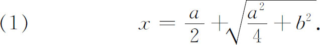
（笛卡儿不考虑负根。）他画出x如下：作直角三角形NLM（图15.2），其中LM＝b，
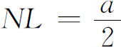
。延长MN到O，使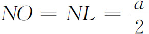
。于是x就是OM的长度。笛卡儿没有证明这个结论2的正确性，但是很明显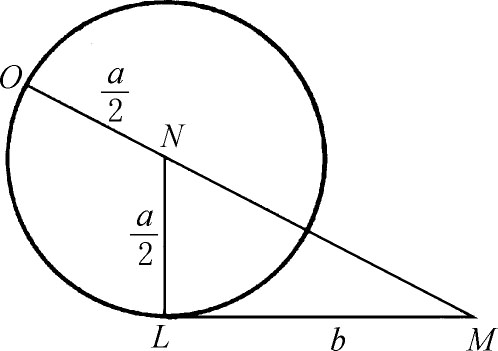
图15.2
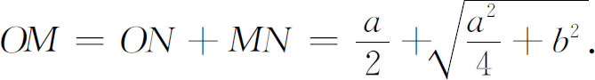
这就是说，由解一个代数方程而得到的（1）式，指明了x的画法。
在第一卷书的前一半中，笛卡儿用代数解决的，只是古典的几何作图问题。这是代数在几何上的一个应用，并不是现代意义下的解析几何。以上所说的问题，可以叫做确定的作图问题，因为结果是一个唯一的长度。笛卡儿下一步考虑不确定问题，其结果有许多长度可以作为答案。这些长度的端点充满一条曲线，他在这里说：“也要求发现并且描出这条包括所有端点的曲线。”曲线的描出，根据于最后得到的不定方程，此方程把未知的长度y用任意的长度x表示出。对此，笛卡儿着重指出，对于每个x，长度y满足一个确定方程，因而可以画出。如果方程是一次的或二次的，就可以按照第一卷的方法，用直线和圆把y画出；对于高次方程，他说将在第三卷中说明怎样画y。
笛卡儿用帕普斯（第5章第7节）的问题来说明当问题归结到一个含有两个未知长度的方程时该怎么办，这问题（他并没有普遍地解出）的叙述如下：在平面上给定三条直线，求所有这样的点的位置（即轨迹），从这点作三条直线各与一条已知线交于已知角（三个角不一定相同），使在所得的三条线段中，某两条的乘积（指长度的乘积）与第三条的平方成定比。如果给定四条直线，画法同上，但要求在所得的四条线段中，某两条的乘积，与其余两条的乘积成定比。如果给定五条直线，画法仍同上，但要求在所得的五条线段中，某三个的乘积与其余两个的乘积成定比。如果给定的直线多于五条，作法照此类推。
帕普斯曾宣称，当给定的直线是三条或四条时，所得的轨迹是一条圆锥曲线。在第二卷中，笛卡儿处理了四条直线时的帕普斯问题。设给定的线（图15.3）是AG，GH，EF和AD。考虑一点C，从点C引四线各与一条已知线交于已知角（四个角不一定相同），把所得的四条线段记为CP，CQ，CR和CS。要求找出满足条件CP·CR＝CS·CQ的点C的轨迹。
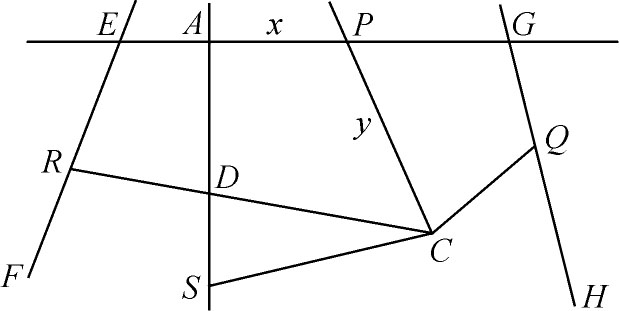
图15.3
笛卡儿记AP为x，记PC为y。经过简单的几何考虑，他从已知量得出CR，CQ和CS的值。把这三个值代入CP·CR＝CS·CQ，他就得到一个x和y的二次方程
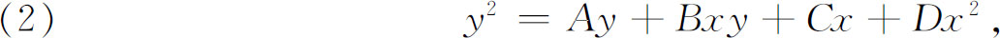
其中A，B，C，D是由已知量组成的简单的代数式。于是他指出，如果任意给x一个值，就得到一个y的二次方程；从这个方程可以解出y，于是就能用直尺和圆规把y画出，像在第一卷里那样。由此可知，如果我们取无穷多个x值，就得到无穷多个y值，从而得到无穷多个点C。所有这些C点的轨迹，就是方程（2）所代表的曲线。
笛卡儿的作法，是选定一条线（图15.3中的AG）作为基线，以点A为原点。x值是基线上的长度，从A量起；y值是一个线段的长度，由基线出发，与基线作成一个固定的角度。这个坐标系，我们现在叫做斜坐标系。笛卡儿的x，y只取正值，他的图局限在第一象限之内，但方程（2）所代表的曲线却无此限制。笛卡儿简单地假定轨迹根本上位于第一象限之内；只附带地说了一下在第一象限外可能出现的情况，他又不自觉地假定了对于每个正实数有一个长度。
有了曲线方程的思想之后，笛卡儿就进一步发展这个思想。他断言，容易证明曲线的次数与坐标轴的选择无关。他指出这个轴要选得使最后得到的方程愈简愈好。他又迈出另外一大步，这就是考虑两个不同的曲线，用同一坐标轴来写出它们的方程，并且联立地解出这两个方程来求出这两条曲线的交点。
也是在第二卷里，笛卡儿批判地考虑了希腊人关于平面曲线、立体曲线和线性曲线的区别。希腊人说，平面曲线是可以用圆规和直尺画出的曲线，立体曲线是圆锥曲线，其余的都是线性曲线，例如蚌线、螺线、割圆曲线和蔓叶线。希腊人也把线性曲线叫做机械曲线，因为需要用某些特殊机械来画出它们。但是笛卡儿说，就是直线和圆，也需要一些工具。机械作图的准确性是无关紧要的，因为在数学上只有推理才算数。他继续说，古人反对线性曲线可能是因为它们的定义不可靠。本此理由，笛卡儿排斥了这种思想：只有用直尺和圆规画出的曲线是合法的(6)。他甚至提出一些用机械画出的新的曲线。他用一句高度有意义的话来作结论：“几何曲线”是那些可用一个唯一的含x和y的有限次代数方程来表示出的曲线。因此，笛卡儿承认蚌线和蔓叶线是几何曲线，其他如螺线和割圆曲线等，他都叫做“机械曲线”。
笛卡儿坚持：可以认为是曲线的，是具有代数方程的那一种。这就开始取消了曲线是否存在看它是否可以画出这个判别标准。莱布尼茨比笛卡儿更进一步，用“代数的”和“超越的”字样来替代笛卡儿的词“几何的”和“机械的”，他对曲线必须有代数方程这一要求提出抗议(7)。实际上笛卡儿和他的同时代人都忽略了这个要求而以同样的热情去研究旋轮线、对数曲线、对数螺线（logρ＝aθ）和其他非代数曲线。
在推广容许曲线的概念方面，笛卡儿迈出了一大步。他不但接纳以前被排斥的曲线，而且开辟了整个的曲线领域。因为给定任何一个含x和y的代数方程，人们可以求出它的曲线，从而得到一些全新的曲线。在《普遍的算术》一书（1707）中，牛顿说：“但是近代人走得更远［比起希腊人的平面、立体和线性的轨迹来］，把所有可以用方程表示的线都接收到几何里。”
笛卡儿下一步考虑几何曲线的分类。含x和y的一次和二次曲线，属于第一类，即最简单的类。关于这一点，笛卡儿说，圆锥曲线的方程是二次的，但他没有证明。三次和四次方程的曲线，构成第二类。五次和六次方程的曲线构成第三类，余类推。他把三次和四次的曲线归为一类，五次和六次的归为一类，是因为他相信，在每一类中，高次的那一个可以化为低次的，正如四次方程的解可以通过三次方程的解来求出。当然，他这个信念是不对的。
《几何》的第三卷又回到第一卷的课题。它的目的是要解决这样的几何作图问题：当用代数语言叙述时，它们引到三次和高次的方程，而且依照代数，它们需要圆锥曲线和高次曲线。例如，笛卡儿考虑了求两个已知量a和q的两个比例中项这一作图问题。对于q＝2a的特殊情形，古希腊人曾经尝试过许多次，这一情形的重要处在于它是解决“倍立方”问题的一种方式。笛卡儿对此问题是这样进行的：设z是一个比例中项，则另一个必定是z2/a，因为
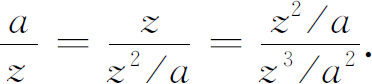
因此，如果取z3/a2为q，就得到z必须满足的方程。由此可见，给定q和a之后，我们必须求z使
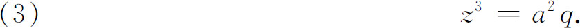
这就是说，必须解一个三次方程。这时，笛卡儿就证明，z和z2/a可以借助一条抛物线和一个圆，用几何作图法求出。
从笛卡儿所描写的这个作图法上看，似乎没有牵涉到坐标几何。但是，抛物线是不能用直尺和圆规画出的（除非逐点去画），所以必须按方程把它准确地描出。
笛卡儿得到z，并不是由于联立地解抛物线和圆的方程而求出它们的交点（x，y）。换句话说，他并不是在我们现在的意义下来图解方程。他所用的是纯粹的几何作图法（但假定抛物线是可画的）和z满足方程（3）的事实，以及圆和抛物线的几何性质（这些性质可以更容易地从这两个曲线的方程看出）。笛卡儿在这里做的和他在第一卷里做的完全一样，只不过在这里解决的几何作图问题中，其未知长度所满足的方程是三次或高次的，而不是一次或二次的。他所给出的关于问题的纯代数方面的解，以及随之而来的作图法，实际上和阿拉伯人所给出的一样，只不过他能够利用圆锥截线的方程来推导关于曲线的事实并且把它画出。
笛卡儿不但立意说明某些立体问题怎样可以在代数和圆锥曲线的帮助下得到解决，而且注意于问题的分类，使人从中知道问题牵涉到什么以及怎样进行解决。他的分类法根据于作图问题所引出的代数方程的次数。如果方程是一次的或二次的，就可用直线和圆把图作出。如果方程是三次或四次的，那就非用圆锥曲线不可。他无意中断言：所有三次的问题都可化为三等分角和倍立方的问题，而且不用比圆更为复杂的曲线，三次问题是不能解决的。如果方程的次数高于四，作图时就需要用比圆锥曲线更为复杂的曲线。
笛卡儿又强调曲线方程的次数是衡量曲线繁简的标准。作图时应该用最简单的曲线（即最低次的方程）。他把曲线的次数强调到这个程度，以至认为像笛卡儿叶形线x3＋y3-3axy＝0（图15.4）这样复杂的曲线，比曲线y＝x4还要简单。
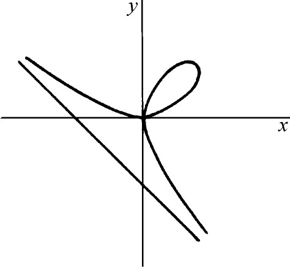
图15.4
笛卡儿把代数提高到重要地位，其意义远远超过他对作图问题的洞察和分类。这个关键思想使人们能够认识典型的几何问题并且能够把在几何形式上互不相关的问题归在一起。代数给几何带来最自然的分类原则和最自然的方法层次。不仅可解性问题和作图可能性问题能够从平行于几何的代数来漂亮、迅速、完全地决定，而且离开代数，决定就成为不可能的了。因此，体系和结构就从几何转移到代数。
在《几何》第二卷的一部分和《折光》里，笛卡儿用坐标几何作为助力，从事于光学的研究。他对望远镜、显微镜以及其他光学仪器中透镜的设计非常关心，因为他体会到这些仪器对于天文学和生物学是重要的。他在《折光》里讨论了折射现象。在他之前，开普勒和阿尔哈森已经注意到下述说法对大的角度是不正确的：折射角和入射角成比例，其比例常数依赖于引起折射的介质。但他两人没有发现正确的定律。斯内尔在1626年之前发现了（但未发表）正确的定律
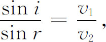
其中v1是光在第一介质中的速度，v2是光进入第二介质后的速度（图15.5）。笛卡儿于1637年在他的《折光》里给出同样的定律，他是不是独立地发现了这个定律，至今还没有考察清楚。关于这个定律，他所给出的证明是错误的。费马立即对定律及其证明进行攻击。这就引起了两人之间长达十年之久的争论。费马一直到他从他的“最短时间原理”（第24章第3节）导出此定律后，才承认它是正确的。
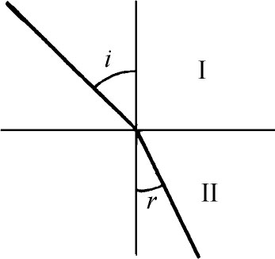
图15.5
笛卡儿在《折光》里描述了眼的动作之后，进而考虑怎样去恰当地设计望远镜、显微镜和眼镜的聚焦透镜。早在古代就知道球形透镜不能使平行光线或从光源S发出的光线聚焦于一点，因此什么形状的透镜能起这样的聚焦作用，还是一个没有解决的问题。开普勒建议用某种圆锥截线，笛卡儿试图设计一个能完全聚焦的透镜。
他成功地解决了这个一般性问题：什么样的曲面作为两种介质的交界面时，能使从第一种介质内一点发出的光线射到曲面上，折入第二种介质而聚于一点。他发现：具有这个性质的旋转面是由一个卵形线（叫做笛卡儿卵形线）产生的。他在《折光》里讨论这个曲线和它的折光性质，并且在《几何》的第二卷里作了补充。
这条曲线的近代定义是满足条件
FM±nF′M＝2a
的点M的轨迹，其中F和F′是固定点，2a是大于FF′的任意实数，n是任意实数。如果n＝1，曲线就成了椭圆。在一般情形下，卵形线的方程对x和y是四次的，这个曲线包括两个没有共同点的闭线，而且一个在另一个之内。在内的那个类似于椭圆，在外的那个可能是凸的，也可能有拐点，如图15.6所示。
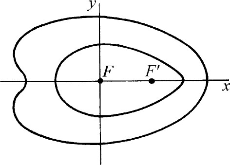
图15.6
我们现在能够看到，笛卡儿和费马研究坐标几何的方法大不相同。笛卡儿批评了希腊的传统，而且主张同这传统决裂；费马则着眼于继承希腊人的思想，认为他自己的工作只是重新表述了阿波罗尼斯的工作。真正的发现——代数方法的威力——是属于笛卡儿的，他知道他是在改换古代方法。虽然用方程表示曲线的思想在费马的工作中比在笛卡儿的工作中更为明显，但费马的工作主要是这样一个技术的成就：他完成了阿波罗尼斯的工作，并且利用了韦达用字母代表数类的思想。笛卡儿的方法是可以普遍使用的，而且就潜力而论也适用于超越曲线。
尽管笛卡儿和费马研究坐标几何的方式和目的有显著的不同，他们却卷入谁先发现的争论。费马的著作直到1679年才出版，但他在1629年已发现了坐标几何的基本原理，这比笛卡儿发表《几何》的年代1637年还早。笛卡儿当时已完全知道费马的许多发现，但否认他的思想是从费马来的。荷兰数学家贝克曼（Isaac Beeckman，1588—1637）把笛卡儿的坐标几何思想回溯到1619年，而且坐标几何中的许多基本思想，无疑是笛卡儿首创的。
当《几何》出版的时候，费马批评说，书中删去了极大值和极小值、曲线的切线以及立体轨迹的作图法。他认为这些是值得所有几何学家注意的。笛卡儿回答说，费马几乎没有做什么，至多做出一些不费气力不需要预备知识就能得到的东西，而他自己却在《几何》的第三卷中，用了关于方程性质的全部知识。他讽刺地称呼费马为我们的极大和极小大臣，并且说费马欠了他的债。罗贝瓦尔、帕斯卡和其他一些人站在费马一边，而米道奇和德萨格站在笛卡儿一边。费马的朋友们给笛卡儿写了尖刻的信。后来这两人的态度趋于缓和。在1660年的一篇文章里，费马虽然指出《几何》中的一个错误，但他宣称他是如此佩服笛卡儿的天才，即使笛卡儿有错误，他的工作甚至比别人没有错误的工作更有价值。笛卡儿却不像费马那样宽厚。
后代人对待《几何》并不像笛卡儿那样重视。虽然对数学的前途来说，方程和曲线的结合是一个显著的思想，但对笛卡儿来说，这个思想只是为了达到目的——解决作图问题——的一个手段。费马强调轨迹的方程，从近代观点来看，是更为恰当的。笛卡儿在卷一和卷三中所着重的几何作图问题，已逐渐失去重要性，这主要是因为不再像希腊人那样，用作图来证明存在了。
第三卷中也有一部分是在数学里占永久地位的。笛卡儿解决几何作图问题时，首先把问题用代数表示出，接着就解出所得到的代数方程，最后按解的要求来作图。在这个过程中，笛卡儿收集了自己的和别人的有助于求解的方程论工作。因为代数方程不断地出现在成百的、与作图问题无关的不同场合中，所以这个方程论已经成为初等代数的基础部分。